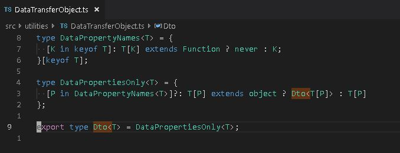

typescript When using TypeScript and streams in NodeJS, use the stream.Stream type until there is reason to use a wider type. It's easy to build a big ball of mud when working with technology we do not understand. Two years into a project, we found ourselves converting among typed arrays, streams, and buffers, without
typescript filter undefined and null values from an array while still satisfying TypeScript's strict null checks. In strict mode, TypeScript makes it illegal to assign an array of type (T | undefined) to an array of type T[]. This prevents bugs by preventing us from dotting into (de-referencing) an undefined
typescript What does [keyof T] do at the end of a type = {} declaration? type Foo<T> = { // pretend we have a type definition for Q here }[keyof T]; What does the [keyof T] do at the end there? Short Answer When placed at the end
 typescript Data Transfer Object (Dto) Type Wrapper in TypeScript. The Dto wrapper turns a class type into a data transfer object type by removing all the methods from the type definition, thereby creating a type that has only data properties. It further
typescript Error handling with an Either type in TypeScript. type Result<T> = T | Error; const someFunc = (isError: boolean): Result<string> => { if (isError) { return new Error(); } return 'Success!'; }; const otherFunc = (isError: boolean): Result<number> =>
typescript TypeScript constructor parameters with public, private, and protected A class constructor can automatically create and initialize class properties by using parameter property declarations. public class Foo { constructor(public bar: string, private baz: number, protected qux: boolean) {} } That is the equivalent of
nodejs import m = require("m") vs import * as m from "m" Image by Varsha Y S (Own work) [CC BY-SA 4.0 (https://creativecommons.org/licenses/by-sa/4.0)], via Wikimedia Commons If you think you understand quantum mechanics, you don't understand quantum mechanics.
typescript String index signatures let us restrict the types that an object can contain. The unrelated image shows the water system in our garden. Now, on to index types in TypeScript. Address defines an interface. AddressBook defines an interface with a string index signature. The compiler will
javascript VSTS Test Coverage with Mocha, Istanbul, NYC, Coburtura and Junit package.json "scripts": { "test": "nyc -r cobertura -r html mocha **/*test*.js -R mocha-junit-reporter" }, "devDependencies": { "mocha": "^2.5.3", "mocha-junit-reporter&
typescript The power of ES 2017 (es8) in TypeScript even with NodeJS 6.11.0 { "compilerOptions": { "module": "commonjs", "target": "es6", "lib": [ "es2017", "dom" ] }, "exclude": [ "node_modules" ] } This tsconfig.
typescript Add TypeScript Definition Files to the NPM Types Organization I accepted the task to publish the oidc-client-js type definition file to the @types organization on NPM. There are two bits to this task: Publish the type definitions to NPM. Update those type